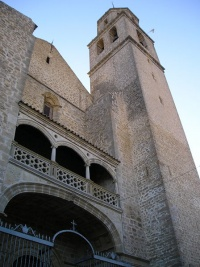

.JPG)
IGLESIA NUESTRA SEÑORA DE LA ASUNCIÓN

ARQUITECTURA
IGLESIA
El interior de la iglesia de La Asunción es de planta de salón de tipo granadino (planta basilical de cruz latina),
en la que predomina la sillería, con una cabecera plana y resaltada y estructurada en tres naves con la misma altura,
separadas por pilares sobre basamentos con cuatro finas columnas adosadas de orden compuesto suplementadas por un cuerpo
complementario que los eleva y deja pasar a través la luz en casi su totalidad.
La cubierta central está formada por bóvedas baídas sobre pechinas y falsas linternas. Estas pechinas están decoradas con
pinturas de gran belleza, con una técnica mixta. Las pinturas (1580-1597) fueron ejecutadas por el artista de la escuela granadina
Pedro de Raxis. Estas presentan un programa iconográfico centrado en pasajes del antiguo testamento y ángeles músicos en la nave
central, siendo el tema pictórico religioso más amplio el de la nave lateral, alternando representaciones de mártires y otros iconos
religiosos de influjo renacentista. Además, las bóvedas dejan sentir la pervivencia del Medievo en los arcos apuntados y bóvedas de
terceletes que separan dichas bóvedas y cubren capillas laterales.
El interior del templo presenta un boato artístico religioso manifestado en las portadas de acceso a la sacristía y antesacristía,
el camarín Barroco del Cristo de la Veracruz, cubierta de presbiterio, retablo mayor, capillas laterales y especialmente en el
programa pictórico representado en las bóvedas de la nave central.
.jpg)
El templo cuenta con accesos por las dos portadas principales, una a los pies, llamada del Sol, y otra, en la pared norte,
o Puerta de Umbría. La portada del Sol es de gran belleza, con influencias del estilo plateresco.
La ligereza y esbeltez interior contrasta con un aspecto exterior castrense en el que rompe una esbelta torre campanario
con un cuerpo superior ochavado, adosada esta a una de las dos portadas con la que actualmente cuenta el templo. Esta se presenta
cobijada en un gran arco solio con casetones sobre el que se levanta una galería con antepecho calado y triple arco rebajado.

CAPILLA
Las capillas se encuentran entre los contrafuertes de los muros del templo, con cubiertas a base de bóvedas estrelladas
de influencia gótica, y que estuvieron pintadas. En su mayoría fueron privadas, levantadas para enterrar al fundador,
sus descendientes o familiares. Entre ellas se encuentran:
Capilla del Bautismo:
Se encuentra la pila bautismal de mármol rojo. La reja que la cierra es de hierro fundido. En el centro de la misma, se encuentra una cruz de calatrava, relacionada con algún villacarrillense miembro de esta orden. La vidriera, en la que se dibuja una custodia, y el cuadro del bautismo de Jesucristo son de fabricación y fecha desconocidas.